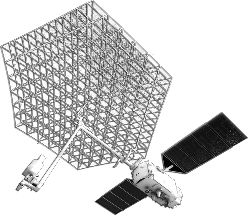

Радиолокационные данные в географических исследованиях и картографировании |
||||||
|
В первом разделе рассмотрены основные особенности радиолокационного зондирования, необходимые для понимания механизмов формирования радиолокационных снимков и специфики изображения на них земных объектов. |
|||||
|
© 2017 г. Балдина Е.А., Трошко К.А., лаборатория аэрокосмических методов, Географический факультет МГУ
имени М.В. Ломоносова
|
||||||